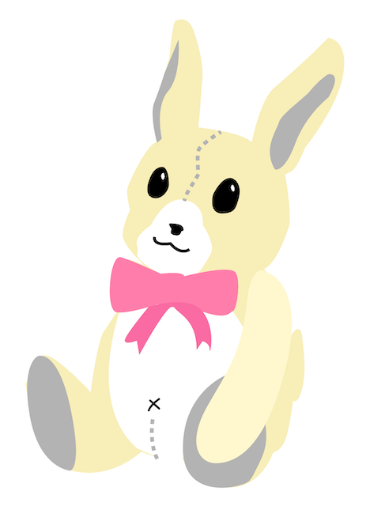
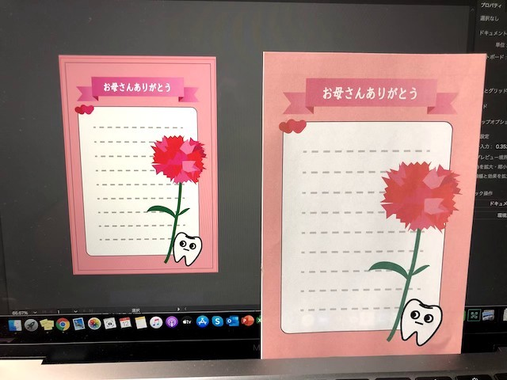

title:illustratorとHTML/CSS
description:オリジナルTシャツデザインと自分のホームページ制作
先月adobe illustratorの使い方を学習したので、アウトプットとしてTシャツのデザインを作成しプリントまで行う。
＜初日＞
ペンツールを使いこなせずクリーム部分がグチャグチャになってしまった。

原因としてはペンツールで①の線を書いた後にアンカーポイントを折らずに②の線を書いたため

①の線を書いた後、②をoptionキーを押しながらクリックしアンカーポイントを折ったのちに、③の線を書くと上手いこといくことがわかった。
＜4日目＞

＜5日目＞

ペンツールを多用し、歯科衛生士の母にメッセージカードを書いた。
＜出来上がったデザイン＞

お酒が好きと公言するとなんとなく「やばい奴」認定されてしまうため、”さりげなくお酒好きをアピールできるデザイン”を心がけた。
また、「お酒」というなんとなくマイナスイメージがついたものと「ねこ」というプラスイメージのものを掛け合わせることで、
「酒好き＝おっさん」というステレオタイプを払拭しようと試みた。
デザインが完成したので早速プリント！といきたいところだったが、銀行口座に500円しかお金が残っていなかったため急遽予定を変更した。
＜HTML/CSS学習＞
Tシャツにデザインの印刷を行うためのインクやライト、スクリーンを購入するお金がなかったため、WEBページ制作について学ぶことにした。
これは単に自分のページがダサかったからという理由だけでなく、他の人に自分は大学時代こういう活動をしていました！と説明しやすくなるなーと考えたからである。
右も左も上も下もわからなかったため、Progateというサイトで学習を始めた。自分のページをカッコよくしたいって方はオススメです。マジで。
フリマアプリでなんとかお金を捻出して有料会員になったかいがありました。無料会員でも結構勉強できます。
＜今後の活動について＞
・このページをスマホやタブレットからアクセスした際のデザインを整える。
・ものづくり班に出された課題に取り組む